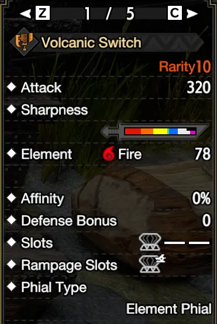

The Switch Axe is a weapon of finesse and precision, masked behind the sheer barbaric rage that is required to wield and use it properly. It is capable of consistently outputting staggering amounts of damage, but requires its user to invest time and effort into learning how to position properly, how to read moves and how to force openings. For this purpose, it provides all the necessary tools, all it asks is for you to use them. Given the extreme skill ceiling presented in this franchise, this guide is aimed to relay information briefly and concisely. It will not help you learn positioning, explore all the niche uses or speedrun-specific conditions and match-ups, but is designed to help you understand:
This notation refers to text you can hover over......for extra tooltips and explanations
Remember to take your time. Don’t compare yourself to others, don’t let anyone tell you how you can and can’t enjoy the game you paid for. This doc does not exist to push a meta onto you, merely to guide those who are a little lost on their way to achieve measurable greatness.
Inexperienced: Players who barely know the weapons moveset, having very little understanding of its mechanics and intricacies, having very little or no experience playing it at all.
Intermediate: Players who have an understanding of the weapons moveset, can hit about half of their counters, and can clear quests reliably within 15-20 minutes.Solo hunts excluding Special Investigations
Advanced: Players who can target and hit parts at will, formulate and change their gameplan, hit most of their counters, have good spatial awareness and usually clear without carting within 8-10 minutes.Solo hunts excluding Special Investigations
Expert: Players who have good understanding of the moveset, nail nearly all of their counters, have great positioning and gauge/amp upkeep and usually clear any quest within 4-6 minutes.Solo hunts excluding Special Investigations . In addition, they have a good general grasp of most monster’s movesets.

Fig. 3.0A - Sword Gauge, Amp Meter
Hitting monsters in Sword Mode fills your Amp meter, which will glow light blue when completely filled.

Fig. 3.0B - Amped State
The process of amping can be completely skipped by successfully countering*Sunbreak Exclusive :
Hitting a monster while Amped generates a small explosion, referred to as a Phial Tick. They attach to the space the monster and weapon met, not to the monster itself. Their damage can rival actual hits, which makes being Amped a top priority for Swaxe.
Note: Clip is purposely unamped for better visibility.
morph Loop It’s important to note that phial ticks not only count as full hits, but carry the same amount of element damage as normal weapon attacks, which can help with certain skills’ uptimes and conditions.
amped morph loop
ebc showcase
The Elemental Burst Counter, referred to as EBC from now on, is the Swaxe Counter. Upon successful Execution, it grants and refreshes Amp, while boasting stunningly high damage. These factors combined made it a very centralizing move. Despite being a counter, it is not a defensive “Oh Shit” option, as the setup takes about one full second, which, in a game as fast as Sunbreak is a long ass time. As a Beginner, you’ll mostly practice using it on roars and other easily telegraphed moves, and mostly directly facing forward.
It is executed by going into Counter Stance with +, then pressing roughly as you are about to get hit.
For the specifics and requirements to successfully execute EBC, please refer to the Advanced Section.
Dodgemorph
You can perform a Morph from either sword mode after any dodge. Going in a straight line, this can be used to cover a solid distance quickly.
Switch Axe has very few, and arguably no, actual defensive tools or safety nets, relying mostly on positioning to not get hit. The Roll Morphs are a great asset for quickly moving a medium distance.
360° Morphs
In addition to covering sheer distance with the morphs, they can also be used to reposition. After any Roll or Hop, the following morph is adjustable at a 360° Angle.
This can be used for simple repositioning, but also aggressively to sneak in a few extra hits and phial ticks.
Axemode: Fade Slash
Holding Backwards and pressing is the input for the Fade Slash. It can be chained to any move that ends in axe mode, including (but not limited to):
Heavy Slam
All Sword → Axe morphs
Forward Slash
Forward Overhead Slash
Fade Slash is a fast repositioning tool that’s easy to combo into. Given the few defensive options Switch Axe has, it’s simultaneously viable and niche. It also enables positional dodges in conjunction with forward Axe → Sword morphs.
Zero Sum Discharge (ZSD) and Soaring Wyvern Blade (SWB)
Using Elemental Discharge while Amped grants access to the Zero Sum Discharge, a very strong utility move that, unlike in World/Iceborne, will only end if you:
Get stunned
Get paralyzed
Die
Run out of sword gauge
Manually abort it.
Further unlike in World/Iceborne, you can cancel the long endlag at any point, provided you have Soaring Wyvern Blade (SWB) equipped and at least 1 Wirebug. SWB will have you end in Sword Mode, and the explosion it leaves behind will be stronger if you morph before it goes off, thanks to Rapid Morph.
Note that ZSD comes out faster if you use it immediately after Double Slash:
In some situations you might find it advantageous to abort a ZSD without actually completing it. To do so, simply hold Backwards while mashing :
Note that manually canceled ZSDs will deal less damage than their completed iterations.
2-Staged Morphed Slash Combo*Sunbreak Exclusive
2Stage is a particularly strong tool for gauge and amp management, especially in combination with the Rampage decoration Phial Switch Boost (PSB). It is accessed from Wild Swing (
+
in Axe, Then
), by Pressing
to morph while equipped. While the first half of the move will generate Sword Gauge (and put you into Sword Mode regardless of gauge), the second half of 2Stage generates a lot of Amp, provided you hit with it.
Wirestep*Sunbreak Exclusive and Switch Charger
Wirestep is the first contender for an actual defensive tool. Both it and Switch Charger fulfill roughly the same purpose: Iframes on start, repositioning in the process (pictured: ee1):
Note that Wirestep’s default direction is to your characters’ right. After any attack, you can hold left to go that direction instead. It is strongly recommended to not use Evade Extender in conjunction with wirestep, because of the nearly uncontrollably large distance traveled, as shown above.
Switch Charger on the other hand goes in a straight line, completely unaffected by Evade Extender,
and comes with the additional benefit of roughly 6.5 seconds of infinite sword gauge. This move is an amazing addition to the Swaxe Kit and feels extremely rewarding to use to its fullest effect. Unfortunately it shares its Switch Skill Slot with EBC and therefore goes mostly unused.
Invincible Gambit
Contrary to what its name might indicate, you’re not actually invincible with this move. Instead of Iframes, it comes with hyper armor instead. By pressing the
button after its completion, you get access to a (relatively) strong Side Slash. The angle of this move can be adjusted slightly as the animation plays out.
Note that Invincible Gambit will move you forward a lot and can occasionally move you straight through monsters.

| Slot | Name | Name | Name | Comment |
|---|---|---|---|---|
| 1 | Forward Slash | Forward Overhead Slash | Forward Overhead Slash is a long commitment, gap-closing move that can lead into triple sword slash. Forward Slash can be used to quickly reposition and inch closer, if needed. Realistically, you’ll always Morph Draw, making the pick preference based. | |
| 2 | Finishing Discharge | Compressed Finishing Discharge | Finishing Discharge turns into Zero Sum Discharge when the weapon is amped, which has amazing utility. It shouldn’t be relied upon for standard gameplay/main damage output, but its possibilities shouldn’t be understated, either. Don’t use it without SWB. | |
| 3 | Axe: Wide Sweep | 2-Staged Morph Slash Combo | 2-Stage generates gauge and gives a good amount of amp if you complete it, allows you to always enter sword mode and is affected by RM, whereas wide sweep isn't. Neither are great for their damage, but 2-Stage helps with upkeep on, fittingly, 2 fronts, and is a very welcome addition to the moveset. | |
| 4 | "In"vincible Gambit | Soaring Wyvern Blade | Wire Step | Vincible Gambit is a low damage, long commitment hyper armor move, of which we already have 2 to choose from. Slot Intrepid Heart 1. Wirestep is a good provider of iframes, using 1 Fast recovery Wirebug and is capable of dropping hellfire. Soaring wyvern is a must if you ever plan on using ZSD as it skips the recovery animation. |
| 5 | Switch Charger | Elemental Burst Counter | EBC has: - Instant amp - Refreshes amp timer - Hyper armor even on miss - Iframes on success - Two hundred Twenty MV It’s way too good to not use. |
Switch Skill Table |
Forward Slash vs Forward Overhead Slash
Ultimately it’s preference, if you prefer a medium-distance, slightly stronger gapcloser go for Forward Overhead, if you want a short-distance stab, pick Forward Slash. While the Distance traveled between the two varies, it is not the only significant difference, as FOS can also lead into Triple Slash, which is a good move in its own right, but locked to Morph → (Traditional) Double Slash input after either Heavy Slam or Forward Overhead Slash. Note that due to this, this specific iteration of the morph loop takes the longest to execute, which can mess with openings.
If you’re still unsure which you prefer, you’ll use the Morph Draw 99 times out of 100 anyway:
The Switch Axe is a weapon with its roots in Jank. Below are some options resulting from that jank, aimed at the curious and those looking to flex. The Barrel Bomb EBC is a pretty useful tool to have, and the Backwards EBC helps illustrate how most people misunderstand the success conditions of this move.
Barrel Bomb EBC
You can proc EBC off of barrel bombs like so:
This works due to hitlag. If you “slap” something with an adjusted Hitzone Value of 40 or higher (Sharpness Multiplier x HZV), you get quite a lot of hitlag. If, during that hitlag a bomb explodes, it counts as incoming attack and triggers your counter. This is a handy option for Sleeping monsters or long downs and you just ran out of amp.
Backwards EBC
Despite what many guides, including this one, say, it is not required for an attack to be within a certain angle to be able to proc EBC.

Many people seem to believe that the angle pictured is required for EBC to function. This, however, is a symptom but not the condition. What’s actually required is for a hurtbox to interact with both the weapon and the player character, either at once or in a specific order:
The backwards EBC can be proc’d off of large, fast hurtboxes, like Diablos’ Dig and Hipcheck. It can also be used to counter his notorious Hornstab, which can otherwise not be consistently countered forward.
The aforementioned jank techs have general use-cases. The following Entries will be way less commonly applicable, but are good to keep in the back of the mind as an option (or as a flex).
Non-Exploding ZSD
If you ever found yourself in a situation where you’d like to get off just a few frames earlier after latching onto a monster, you’re in luck:
Instead of mashing X, you mash the SWB input, which skips the explosion. Note, however, that the Gauge is still consumed. The singular potential upside this has over just regularly aborting/exploding is that it's just that little bit quicker. Literal Frames.
Small Bomb EBC
Much like their big counterpart, small barrel bombs can also be used to proc EBC:
This specific EBC is frame perfectbut generously buffered, just mash button. , very strict on positioning and can only be executed against walls and ledges. It may or may not be subject to internal lag and camera position. In solo gameplay, this can be used in times of extreme desperation. The biggest use case however is with small bomb-happy teammates in multiplayer, e.g. LS or Strongarm GS players.
“Naked” Iframes
Formerly a staple of the franchise and a relatively comfortable option in most older games, Rise dramatically reduced the amount of Iframes you get on a roll, all the way down to 4 (at 30 fps), making actually “rolling” moves a much more limited option. It’s important to note that you can still roll most roars and a lot of quick attacks, but due to how tight the timing is (usually you have 2 whole frames to choose from), it’s generally not advised to rely on it, at least without Embolden, Evade Window or some other form of increased iframes on dodge.
However, it can still be useful in a pinch, or as a raw flexing option.
With the popularity of Worldborne, a glaring flaw with the Franchise was highlighted yet again: the abysmal conveying of information and stats. This led to many a frustrated hunter, due to the sheer amount of clickbaity misinformation and cryptic tables being circulated online, with no one safe go-to place to verify and double check the newfound takes and information. In turn, this led to many gimping themselves unknowingly and subsequent frustration with the perceived unfair tankiness of endgame hunts. Annoyed by this, many skilled players and number crunchers sat and worked together, bonding over the desire to put things right. And that's beautiful.
As the Author, I sincerely hope this guide will be of use to whoever stumbles upon it. Feedback is always welcome, and I’m happy to answer any question arising out of this to the best of my ability, or point you to someone who can.
In difficult times like these, it’s more important than ever to find ways to express oneself, to stay in touch and informed about those you love, and to stick together, as the arising challenges are greater than any one person can feasibly handle on their own. Stay safe, stay hydrated, and once in a while, touch grass and look at bird. Bird nice.

Great Tit!